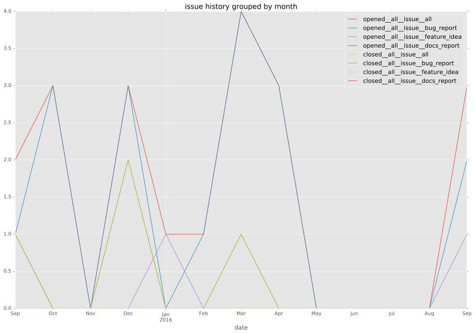
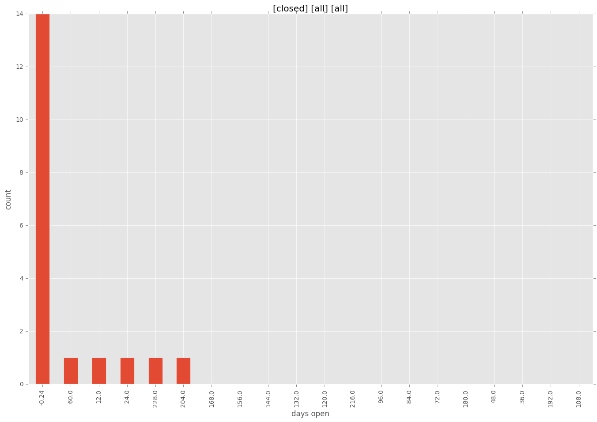
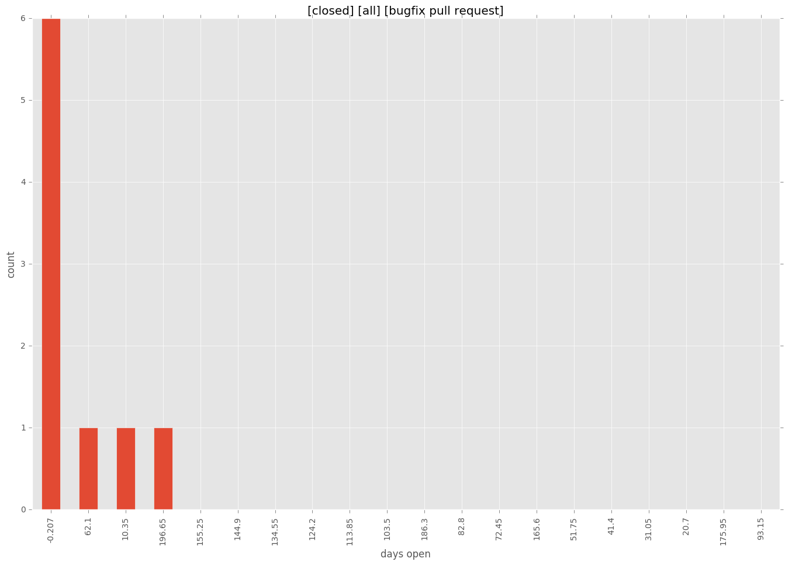
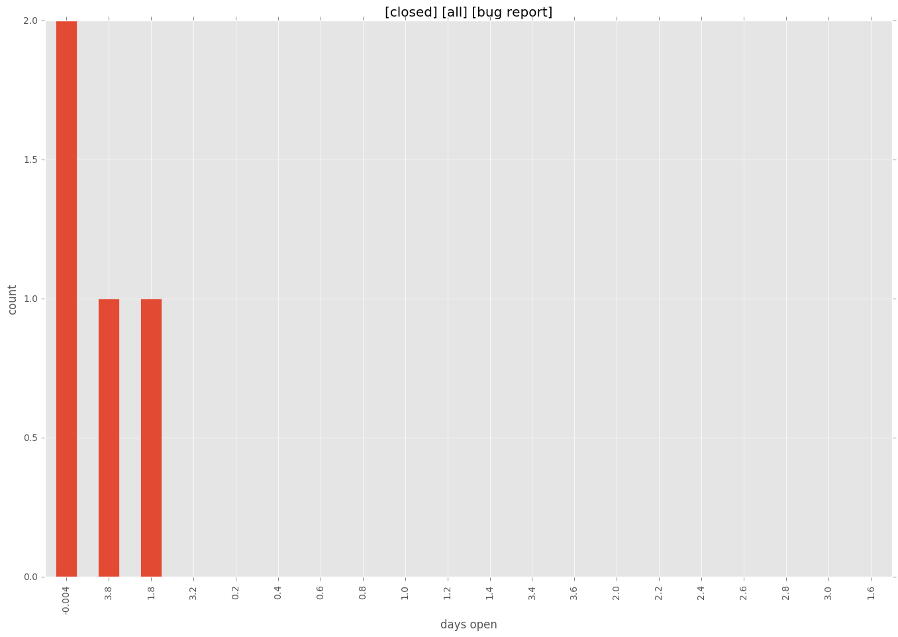
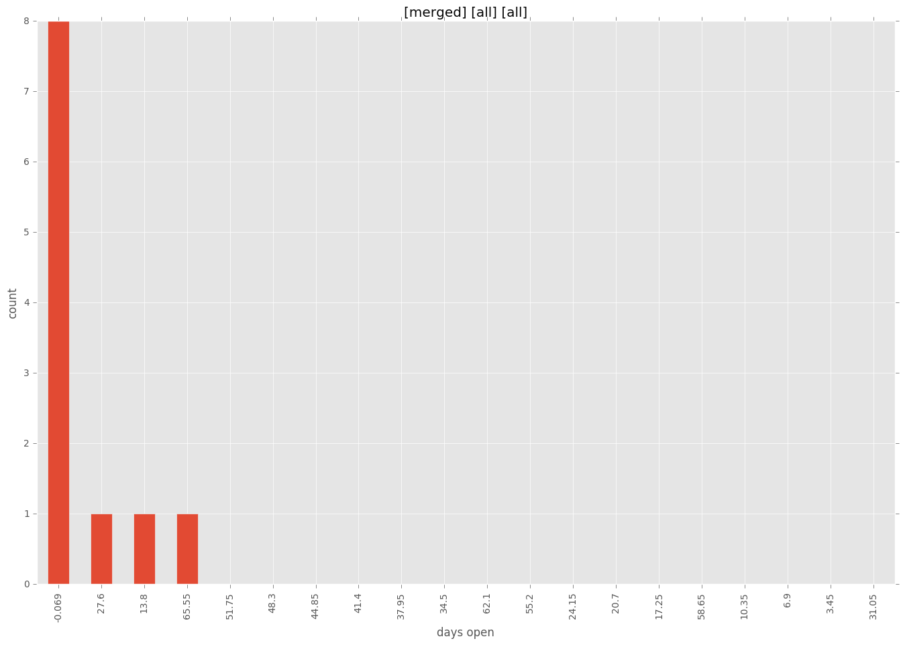
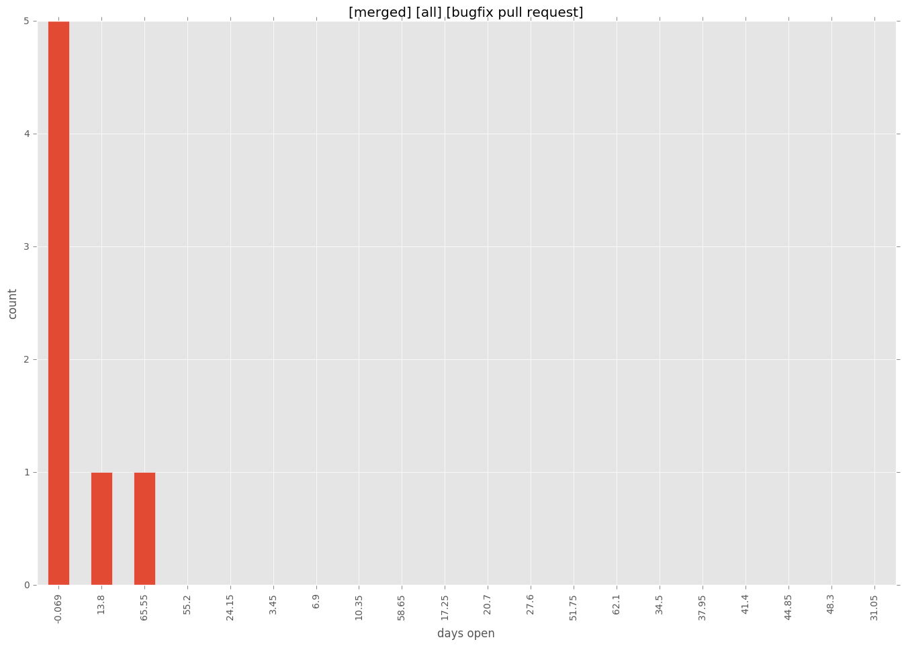
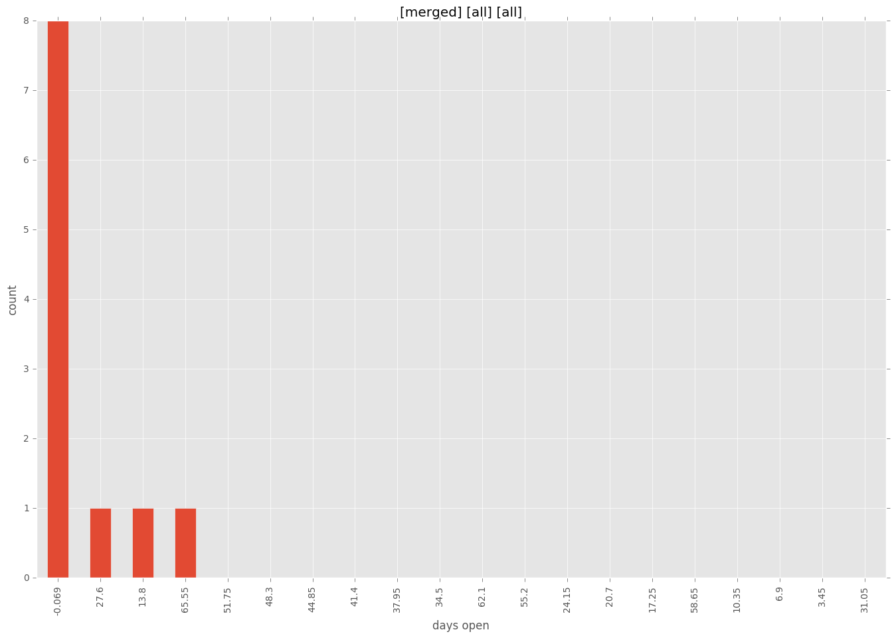
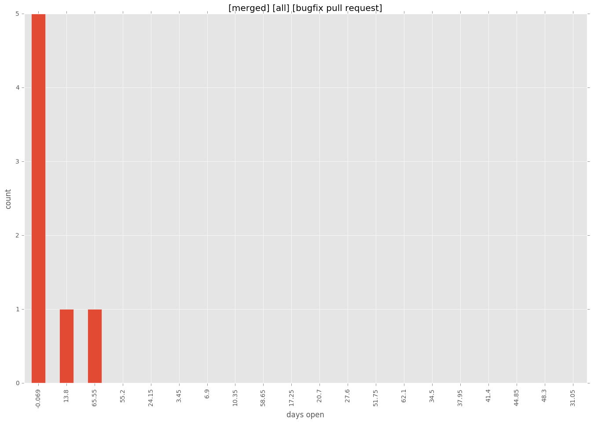

total issue counts
all: 1
feature pull request: 3
docs report: 3
pullrequest: 19
docs pull request: 3
bugfix pull request: 11
feature idea: 3
issue: 19
new plugin: 1
bug report: 13
issue history

days open by issue type
bugfix pull request
count: 16
std: 53.7313921279
min: 0
max: 207
median: 3.0
mean: 24.4375
all
count: 30
std: 57.5704366182
min: 0
max: 240
median: 1.0
mean: 23.3
pullrequest
count: 0
std: nan
min: nan
max: nan
median: nan
mean: nan
docs pull request
count: 6
std: 0.0
min: 0
max: 0
median: 0.0
mean: 0.0
docs report
count: 0
std: nan
min: nan
max: nan
median: nan
mean: nan
feature pull request
count: 1
std: nan
min: 240
max: 240
median: 240.0
mean: 240.0
feature idea
count: 0
std: nan
min: nan
max: nan
median: nan
mean: nan
issue
count: 0
std: nan
min: nan
max: nan
median: nan
mean: nan
new plugin
count: 2
std: 0.0
min: 31
max: 31
median: 31.0
mean: 31.0
bug report
count: 4
std: 1.91485421551
min: 0
max: 4
median: 1.0
mean: 1.5
closures grouped by total days open




 


